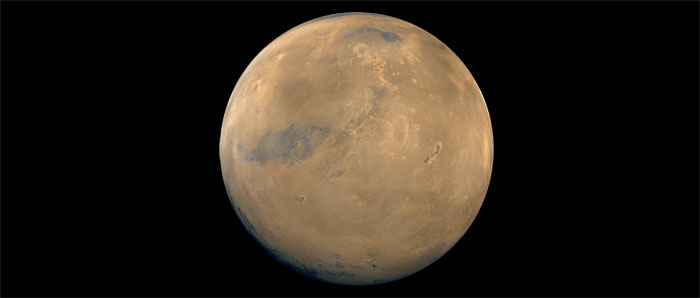

Mars
Mars, la planète rouge-orangé la plus lumineuse après Vénus et Jupiter, reste visible de la Terre pendant plusieurs mois. C'est la quatrième planète à partir du Soleil, la dernière des planètes telluriques. Elle parcourt en 687 jours une orbite excentrique, sa distance au Soleil étant de 20 7000 000 km au périhélie et de 249 000 000 km à l'aphélie. Mars est une petite planète de 6796 km à l'équateur et de faible densité.
Elle possède deux petits satellites, Phobos et Deimos. Phobos, le plus proche, gravite à 9 270 km de Mars, Deimos à 23 400 km. Ce sont sans doute d'anciens astéroïdes capturés par Mars. Leur forme est irrégulière, Phobos ayant une largeur maximale de 28 km et Deimos de 16 km.
Mars effectue un tour complet sur elle-même en 24 h 37 mn 6 s. Son axe de rotation étant incliné d'environ 24°, elle est soumise, comme la Terre, au rythme des saisons. Il y fait cependant plus froid, les températures dépassant rarement 0 °C en été et pouvant atteindre - 111 ° C la nuit. Aux pôles, elles restent toute l'année inférieures à - 123 °C.

Source : Wikipédia
Atmosphère
L'atmosphère de Mars est très ténue sa densité est celle de notre atmosphère à une altitude de 30 000 m. Elle est composée de gaz carbonique (95 %). d'azote et d'argon (5 %) et ne renferme que des traces d'oxygène et de vapeur d'eau. Au périhélie, son réchauffement engendre de violentes tempêtes, les vents soulevant des nuages de poussière qui finissent par envelopper toute la planète.
Relief et géographie
Les régions polaires de Mars sont recouvertes de calottes dont la blancheur contraste avec sa teinte dominante rouge sombre. En été, la calotte Nord est essentiellement formée de glace aqueuse (eau gelée), la calotte Sud de neige carbonique (gaz carbonique congelé). Ces calottes deviennent plus importantes l'hiver, du fait de l'extension du dépôt de glace et de neige carbonique.
Hémisphères Nord et Sud ont des physionomies différentes l'hémisphère Sud est plus accidenté, grêlé de cratères et rainuré en tous sens. L'hémisphère Nord est plus plat. On y observe, autour des régions polaires, de vastes champs de dunes façonnés par les vents, semblables à ceux du Sahara.
Contrastant avec le relief quasiment plat de l'hémisphère Nord, les régions de Tharsis (aussi vaste que l'Afrique) et d'Elysium, situées non loin de l'équateur, sont si élevées qu'elles forment de véritables protubérances sur le profil courbe de la planète. Elles abritent d'immenses volcans éteints. Le Mont Olympe, dans la région de Tharsis, est sans doute le plus grand volcan du système solaire : il culmine à 25 km au-dessus de la surface de Mars. Son cratère de type
caldeira mesure 80 km de diamètre, et sa couronne de lave s'étale sur des centaines de kilomètres. Les systèmes rayonnants de failles, visibles autour de Tharsis et d'Elysium, datent sans doute de l'élévation de ces terrains.
Un gigantesque réseau de vallées et canyons s'étend sur 4000 km à l'est de Tharsis. Il aboutit à des terrains chaotiques, ravinés et rocailleux. La surface de Mars n'est pas sillonnée de canaux rectilignes (comme on le pensait autrefois), mais on y observe en plusieurs endroits des réseaux sinueux laissant supposer qu'elle a connu, à une certaine époque, un important ruissellement d'eau. Aujourd'hui, Mars est une planète sèche qui n'abrite aucune forme de vie.
Plan du site | Contact | Site réalisé par Mathieu Morainville.